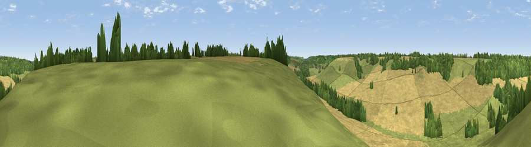

Viewpoint near Elham
#41784 in England · top 78% of its area beats it · near ElhamThe view, rendered

A 360° render of this exact spot computed from the terrain model, tree cover and land cover — summer colours, afternoon light, calibrated against photographs of famous viewpoints. Real trees, hedges and buildings will differ in detail.
The panorama
Grey silhouette: terrain skyline in each direction (720 bearings, Earth curvature and refraction included). Dashed green: skyline with trees (+15 m) and buildings (+8 m) as obstacles. Blue strip: how far the ground is visible on each bearing.
Where the view opens
Wedge length = distance to the farthest visible ground on that bearing (vegetation-aware). Rings at 10, 25 and 50 km.
What fills the view
50% cropland · 35% grassland · 14% woodland
Angular shares of the visible panorama (visual magnitude), not map area. Landscape diversity 0.43 (0–1 Shannon).
Key numbers
More beautiful places nearby
The staircase of upgrades: each row has a higher view potential than everything closer. Driving times are estimates from straight-line distance, calibrated against real road routing — check an actual route before setting out.
| Place | Direction | Drive | Score |
|---|---|---|---|
| Viewpoint near Bossingham | NNW · 5 km | ~11 min | 34.4 |
| Viewpoint near Bishopsbourne | NNW · 5 km | ~12 min | 35.1 |
| Viewpoint near Etchinghill | SSW · 6 km | ~13 min | 48.8 |
| Viewpoint near Etchinghill | S · 8 km | ~16 min | 76.6 |
| Viewpoint near Etchinghill | SSW · 8 km | ~16 min | 76.9 |
| Tolsford Hill | SSW · 8 km | ~17 min | 77.9 |
| Viewpoint near Capel-le-Ferne | SSE · 10 km | ~19 min | 80.2 |
| Viewpoint near Willingdon | WSW · 75 km | ~99 min | 83.4 |
51.17113, 1.12890 · source: screening · position refined by local search. Computed location — check access rights before visiting.